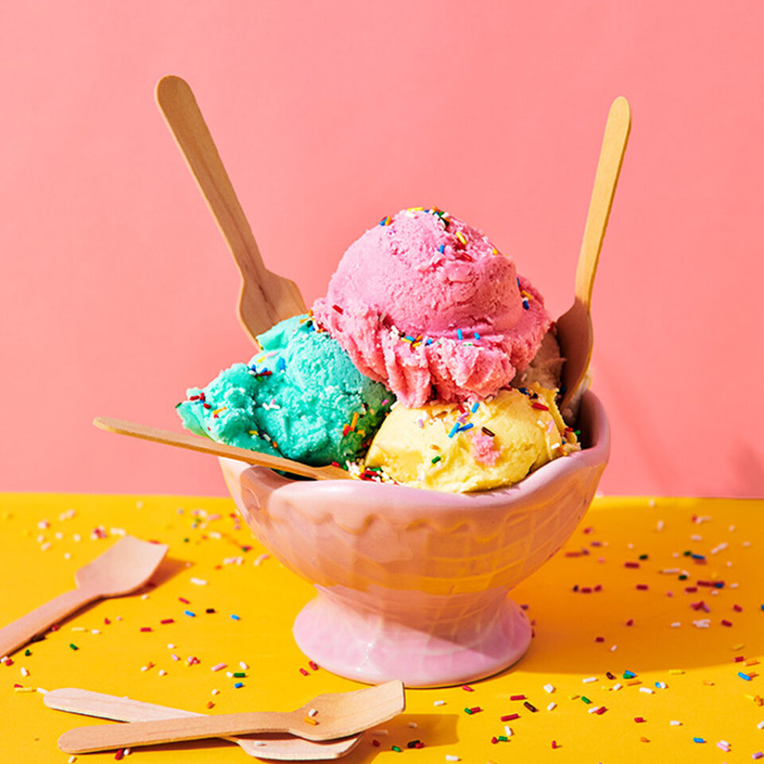

Ice Cream

Description
Classic vanilla bean ice cream is a rich, frozen dessert crafted from a cooked custard base that delivers a luxuriously smooth and velvety texture. The process begins by gently heating whole milk and heavy cream infused with real vanilla, which is then carefully whisked into a mixture of egg yolks and sugar. This custard is cooked until lightly thickened, thoroughly chilled to mature the flavors, and finally churned in an ice cream maker where incorporated air transforms it into a soft, creamy treat. A final period in the freezer hardens it into the perfectly scoopable, timeless dessert loved worldwide.
Ingredients
- Heavy Cream: 2 cups (creates the rich, creamy texture).
- Whole Milk: 1 cup (balances the fat content).
- Egg Yolks: 5 large yolks (these act as emulsifiers for a smooth, scoopable consistency).
- Sugar: ¾ cup granulated white sugar.
- Vanilla: 1 whole vanilla bean (split down the middle and scraped) or 1 tablespoon high-quality pure vanilla extract.
- Salt: 1 pinch of kosher salt to enhance the vanilla and balance the sweetness.
Steps
- Heat the Dairy:Infuse the flavor.In a medium saucepan, combine the whole milk, 1 cup of the heavy cream, the sugar, the salt, and the scraped vanilla bean seeds (along with the empty pod). Heat over medium heat until it just begins to simmer and steam rises from the surface. Remove from heat and let it steep for 15 minutes.
- Temper the Eggs:Crucial: Do not rush this step.In a separate medium bowl, whisk the egg yolks until perfectly smooth. To prevent the eggs from scrambling, slowly drizzle about a cup of the hot dairy mixture into the egg yolks while whisking constantly. This gently raises the temperature of the yolks so they can be safely added to the hot pot.
- Cook the Custard:Cook until it coats the back of a spoon.Pour the tempered egg mixture back into the saucepan with the rest of the dairy. Cook over medium-low heat, stirring constantly with a wooden spoon or heatproof spatula, making sure to scrape the bottom of the pan. Cook until the mixture thickens slightly and registers about 170°F (77°C) on a digital thermometer.
- Strain and Chill:Minimum 4 hours, ideally overnight.Pour the remaining 1 cup of cold heavy cream into a large bowl and place a fine-mesh sieve over it. Strain the hot custard through the sieve into the cold cream to catch any accidental cooked egg bits and to remove the vanilla pod. Stir to combine, then cover and chill the mixture in the refrigerator until completely cold.
- Churn the Ice Cream:Takes about 20 to 25 minutes.Once the base is thoroughly chilled, pour it into your ice cream maker. Churn according to the manufacturer's instructions until it reaches the consistency of thick, luscious soft-serve.
- Freeze to Harden:Locks in the texture.Transfer the soft-serve ice cream into a chilled, airtight, freezer-safe container. Press a piece of parchment paper or plastic wrap directly against the surface of the ice cream to prevent ice crystals from forming. Freeze for at least 4 hours, or until firm enough to scoop.
Home